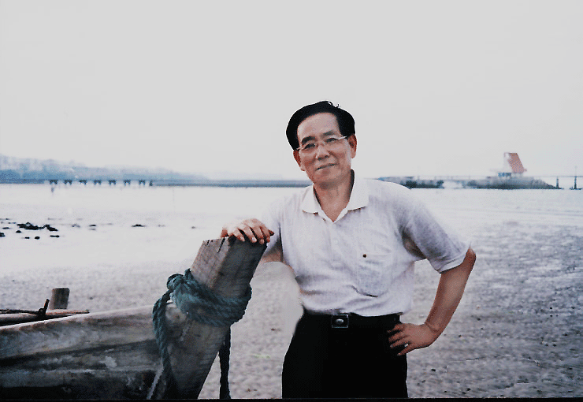
著名作家、书法家，原烟台市文联主席戴恩嵩先生
戴恩嵩先生的文墨情怀
戴恩嵩先生是莱州籍的著名作家、书法家。上个世纪七十年代初，他被调入掖县（今莱州）县委办公室，先作文秘工作十余载，后任县委常委宣传部长。八十年代初被调往烟台，先后出任《烟台日报》社党委书记兼总编和烟台市文联主席职务。
戴恩嵩先生自幼酷爱文学和书法，这个牢固的文墨情结，使他尽管担任了领导工作，也从未忘记写作。在莱州工作期间，每到忙完了公务后的晚上，便冲上一杯咖啡，驰神走笔，写到深夜两点多。1990年，他加入中国作家协会，退休后仍笔耕不辍。从他数百万字的文学作品和洋洋洒洒的书法作品中，可以探知他心灵的那片绿洲……
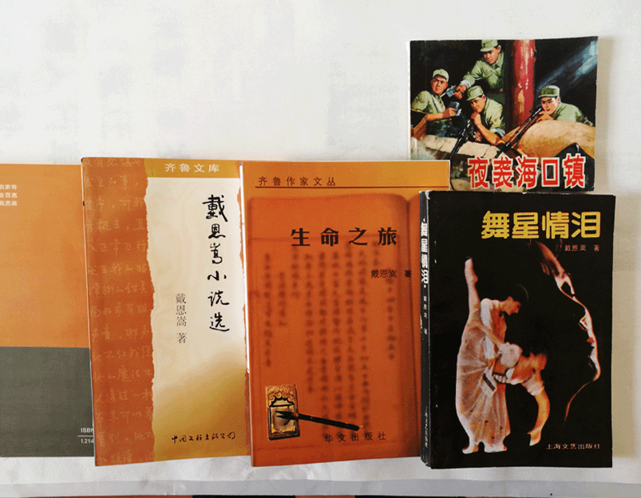
文学作品照片
（一）
戴恩嵩先生公开发表作品，始于上个世纪的五十年代初。那时他还是一名16岁的初中学生，在《齐齐哈尔日报》上发表了长达3000多字的《读〈夏天〉有感》，受到编辑的器重，让他做该报的特约通讯员。后来他的《夜袭海口镇》问世，印数100万册，发行全国。
改革开放以来，他的小说新作不断。1985年5月，他的短篇小说《神秘的模特儿》在《海鸥》文学杂志上发了头题，作者采用“先黄后白”的手法，描写了一位画家和一位舞蹈家在事业和爱情上的种种纠葛，事业成功了，爱情消解了，最终把两人的心灵升华到俗世凡间难以企及的高度。在他的获奖中篇小说《冷热女人心》中，主人公们的爱情和事业都取得某种成功，但他们的心灵中都留下了累累伤痕。当然，更加让读者难止泪水的，还是他发表在《山东文学》上的中篇小说《丫丫》，小说着力刻划了毫无人性可言的郓发，道德和法律对他都无可奈何，最后作者只好让那只极通人性的好狗把他咬死。
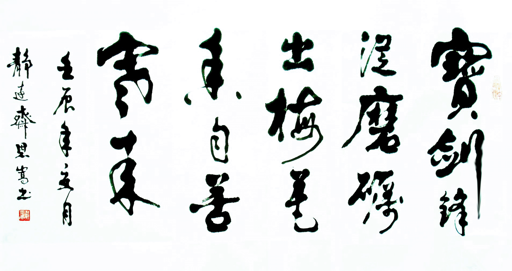
宝剑锋从磨砺出
1989年春，上海文艺出版社以首版5万册的印数，将戴恩嵩先生的长篇小说《舞星情泪》推给读者。作品以行云流水般的文字，细致入微地刻画了一群不甘沉寂、奋力拼搏的当代青年的鲜活形象。天生丽质的青年女子金玉玲遭遇坎坷，经历了情和泪的反复洗礼之后，能舍敢取，决不向命运低头，终于获得了事业上的成功。作家赋予作品人物的是良知和觉醒，奋力发掘并昭示的是一种不屈不挠的民族精神。这部长篇小说，给我们提出了许多值得深思的问题，正如著名文学评论家谭好哲先生，在他的《寻觅人生的支点——评戴恩嵩的长篇小说〈舞星情泪〉》一文中所说的那样：《舞星情泪》中“人物的形象内涵，已经远远地超出了他在小说的特定情景设计里所扮演的角色的意义”，“如果说金玉玲的爱情寻觅以情感的失落收场却终于以事业上的成功获得了某种精神补偿的话，那么我们呢，你、我、他，我们每一个现实中的人们有怎样的爱情又有怎样的事业呢? 金玉玲肯定是算不上—个幸福的人，可我们是幸福的吗? ”
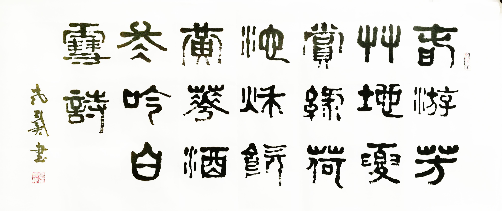
春游芳草地
再一次让我们感悟到戴先生心灵世界的高远与广博、深邃和宁静，是在十年之后。1998年岁末，《戴恩嵩小说选》出版了。当我一篇接一篇的读下来的时候，眼前似乎出现了这样的一些景象：远航的船儿归来了，载着风吹浪打过的斑斑印痕，载着满仓的思索与成熟，徐徐地驶进了平静的港湾；搏击长空的鹰隼降落了，驻足在风剥雨蚀了千百年的高山巨岩上……鹰隼也罢，船儿也罢，能见识的都见识到了，该经历的也都经历过了，一切都处得安然，一切都摆得平静，即使空中电闪雷鸣，终归波澜不惊。一个人的心态如果到了静如止水的境地，也就会心扉大敞了。
走进新世纪以来，戴恩嵩先生的文学随笔《生命之旅》于2004年结集出版。这些随笔很耐读，既有散文的韵致，又有杂文的犀利，高屋建瓴且精于思辩，大气磅礴而不失隽永。从题材上看，有察世修身、说古道今的，有议治讲法、谈艺论商的，还有民俗文化、金石书法等等，涉猎面极广。我最喜欢的是他的《我家的“翰林院”》。
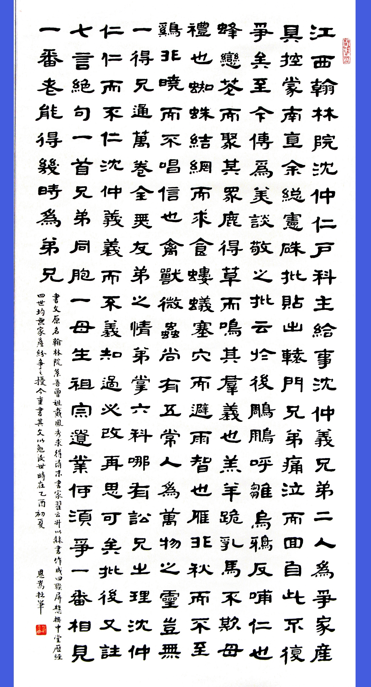
翰林院
《我家的“翰林院”》写的是戴家祖上用一斗小麦从晚清书家翟云升手中求来的以《翰林院》为内容的书法四联屏。当时被誉为书法界“四小名家”的翟云升隶书字写得很好，然而，戴家先人更看重的是《翰林院》这篇文章中阐述的道理，毕恭毕敬地把它请回家，就是为了让后世的子孙们读书、习字、明理。
少年时代的戴恩嵩，每晚都要面对《翰林院》练习半个时辰的毛笔字。父亲一再告诫他，“写字是修心养德”，要把字装进心里，把心贴在字上。也就是说，写字与修心养德不可分割，文品与人品不能相悖。这，就是一位普普通通的庄稼人的道德观念和行为准则。自幼经历了这样的熏陶，使戴先生的字和文章一样，气质凝重而豁达，字里行间透着一股特别的灵气。什么灵气？仁、义、礼、智、信，《翰林院》的精神内核，是灵气，也是德性。
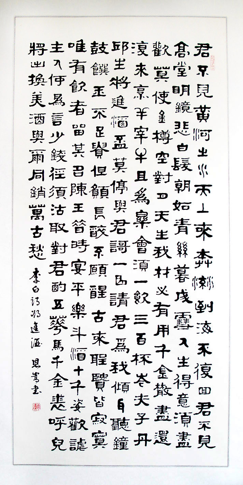
李白将进酒
人类社会正行进在二十一世纪的大道上，十三亿中国人目标一致地在奔小康。当城乡大都用上电器、连学生腰里也别上手机的时候，是不是应该回过头来看一看我们的民族丢失了什么？是不是应该到《我家的“翰林院”》里寻找或者借鉴一点什么呢？
读《我家的“翰林院”》，有一种置身于高山深谷的感觉。这里，有萋萋的芳草，有葱郁的树林，有甘甜的泉水，还有清新的空气。这里是一片宁静的世界，静至极处，便能够听得见芳草、林木、山泉和气流在歌唱，在叙说，在呐喊，汇成了震撼心灵的山谷回音——中国的乡村农舍中不能没有“翰林院”，中国的城市居室中也不能没有“翰林院”
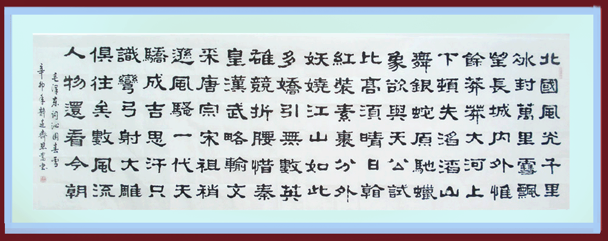
沁园春雪
（二）
熟悉戴先生的人都知道，他是书法与文学同步，诗文与书法并茂，相辅相成，相得益彰。他有一首诗《学书心得》：“昔称书道文余事，挥毫选韵艺理通。未作诗文难下笔，恐人唤我缮抄公。”书为文之余，为书法而创作的数百首格律诗，被戴先生称为“文学创作的延伸”。
在他的书法作品中，我读过他的七律《登烟台山》、《重登望江楼》、《诗咏莱州四首》、七绝《爱竹》、词《浪淘沙﹒塔山行》等，还有那些耐人寻味的楹联：“写作，读书，弄墨，为自我勤耕心田乐土；品茗，谈艺，交游，同他人共润文海诗洲。”格律森严，却毫无拘束，纪事抒情一如行云流水，清新隽永而激情奔放，潇洒飘逸又出神入化，韵辙规范，朗朗上口。读后余音不绝，层层涟漪在心中荡漾复返，千曲百回。
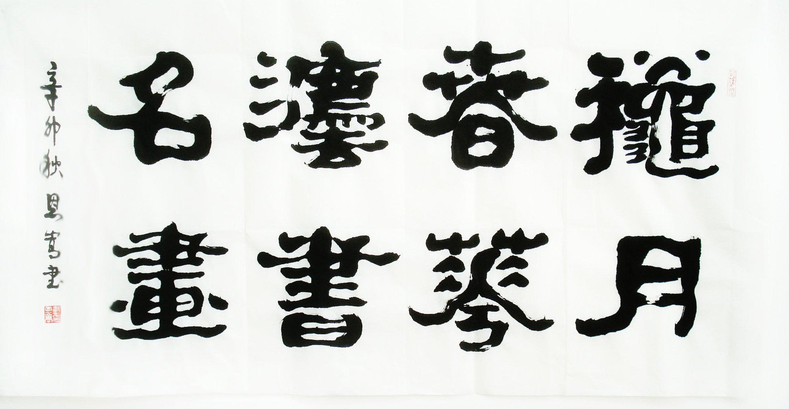
秋月春花法书名画
《花甲述怀三十六句》是诗人1998年60周岁生日时创作的一首五言古诗，把人生旅途中所经历的雨雪风霜，喜怒哀乐，甜酸苦辣都概括起来了。诗中的绵绵记忆与浓浓深情，最是拨动人的心弦。六十度春秋，36行诗句，胸怀坦荡，直面人生，客观而理性地自我剖析，让读者们的思绪峰回路转，使人茅塞顿开。我对这首诗情有独钟，特地珍藏在电脑中，时而调上视屏，细细地品味，借以为镜，感悟益深。
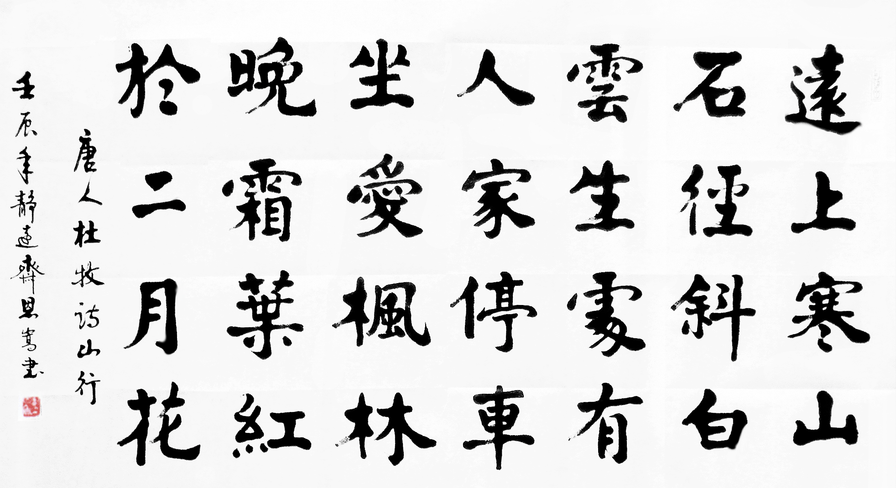
山行楷书
退休以后，笔者常约老友数人，爬山越野，顺便拍一些自以为有趣味的景物。有一次，我把根植于莱州六百多年的一棵黑弹树的照片传给他，他作了一首七律《黑弹树》：“莱州沃土生奇树，阅尽沧桑数百年。体阔神飞如虎跃，枝繁叶茂似龙盘。经寒历暑骨筋壮，宿露餐风意志坚。身与天和居广野，不矜高古在人间。”后来，他又用隶书写成横幅，至今挂在我家客厅。读了这首诗，相信所有的读者都能从中领略到诗人那山高海阔、纵横万里的胸怀，从独特的艺术视野中分享到古树历经沧桑却又挺拔飞扬的风采。即使没有机会亲眼目睹书法原作，也一定会想象出这幅隶书作品苍劲、朴茂、凝重、遒丽的神韵。
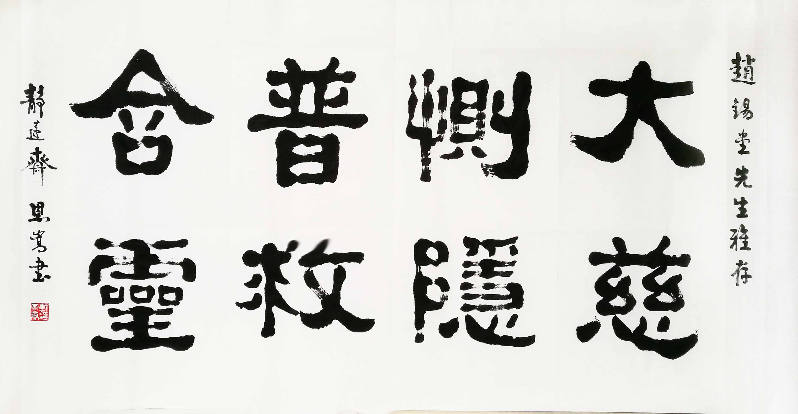
赠医生友人
戴恩嵩先生8岁开始习书，启蒙老师是身为农民的父亲。父亲读过私塾，深谙毛笔书写规范，教他写字前得净手、研墨、备纸、静坐，进入心无杂念的状态，方可执笔。他从隶书入手，遍临《史晨》、《礼器》、《曹全》、《张迁》等碑帖，继而研习颜、柳楷法，再入行草。半个多世纪以来，他在文学创作之余，研书习字，临帖不辍。他曾多次说到，书法创作者的胸怀应该是个大熔炉，前辈的书法经验、招数、手段，若能悄然溶入自己的血液，一旦被灵性触发，迸发而出的是个性的熔岩，从而塑造出独一无二的自己。他在这条路上将追寻一生。
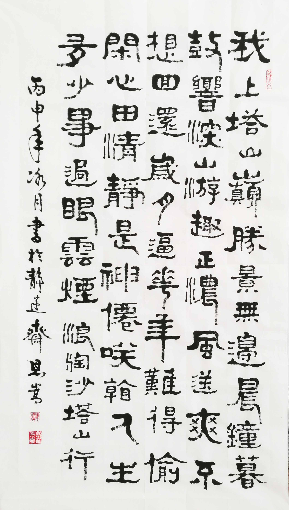
自作词：浪淘沙
戴恩嵩先生把饱览祖国名山大水看做是最惬意的精神补给。在他退休后的几年里，每年自费旅游将近一个月，沉浸在山川美景之中。他专程去齐齐哈尔市，重登45年前中学时代在这里读过许多中外名著的望江楼，再睹嫩江源远流长的宽博雄姿，写下了优美的诗篇；他三次登临黄山，饱赏如诗如画的山色奇观；在碑刻如林、禅风浓郁的齐云山，他亲眼目睹了“日照香炉生紫烟”的壮观景色；在泰山之巅，他用“只见苍松悬陡壁，一年四季笑春风”的诗句表达着欣喜若狂的心情；为了寻访古代文人的故乡，他在婺源流连忘返，久久不忍离开；在保存完好的黟县西递村明清古民居，他访古寻幽、与年近九旬的老书家结下了忘年之交；他走进瀑流如雷、古木参天的天河谷原始森林，高唱出“神鲤潭边金玉响，仙人脚下鲋鲥惊。顶天檫木凌云气，立地枫林醉酒情”的优美诗章……
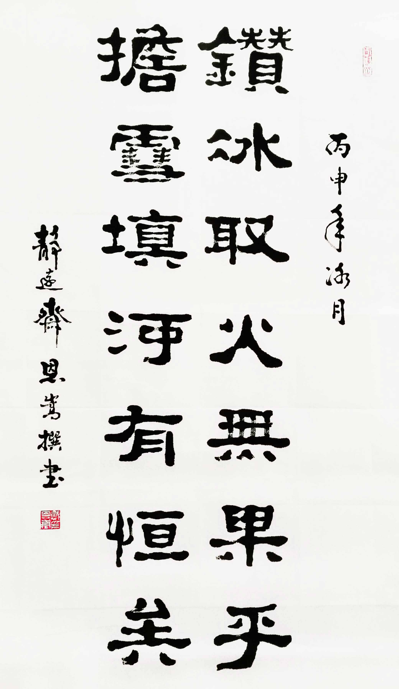
自作对联
古人云：“外师造化，中得心源。”戴先生从对大自然的感悟中吸取了丰富的营养，在他的视野中，一山一石、一草一木，生生息息，皆有生命，千姿百态，各有灵性。含而蓄之，永不枯竭；引而用之，文思泉涌；凝之笔端，风云随焉。惟如此，作家、诗人、书法家的情感、才智和艺术追求才能在作品中得到最完美的体现。隶书至汉而大盛，兹后的两千多年间，善隶者众。而戴恩嵩先生的隶书博采众长，起势、布白、结体、运笔，自成一格：体高气逸，雅韵绝俗，如高天流云，空谷鸟语，云蒸霞蔚，日月苍穹，万千景象，尽在其中。读之，如临岸听涛，如远观飞瀑，如纳大地胎息，如闻天籁之音，让人感受无尽。
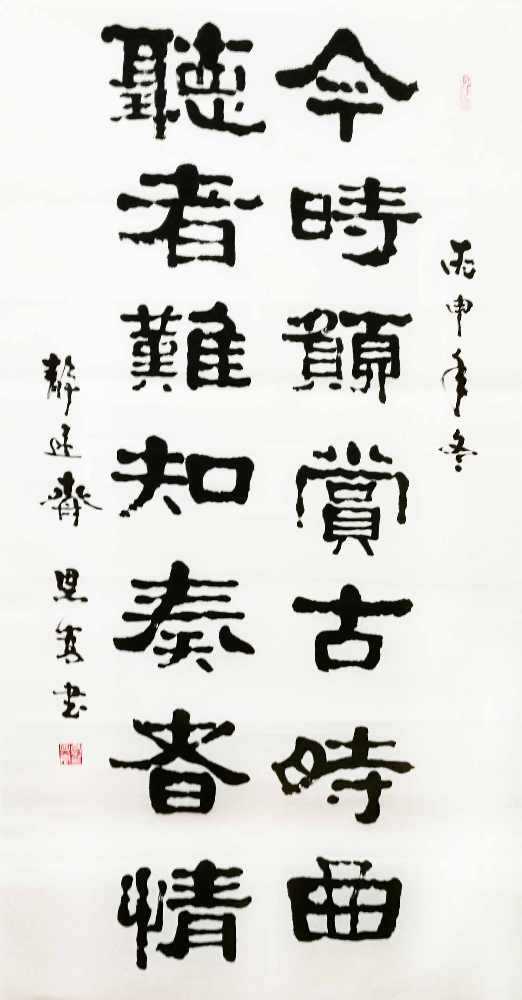
自作对联
1991和2000年，戴恩嵩先生以自撰诗联的书法作品，先后两次在“中日文化交流书法展”中获奖。1992—2006年，他的自作诗词书法作品在全国性的“金鹅奖书画大赛”、“神州书画邀请展”、“中华颂书画大赛”、“大红鹰杯书画大赛”、“共产党人书画大赛”等重大赛事中，均获金奖或银奖。1997年，烟台为承办“亚太经合组织投资贸易博览会”，将他的书法作品作为珍贵礼品赠给18个亚太国家和地区。在中外文化交流、招商引资中，他的百余幅书法作品进入欧美等20多个国家和地区。
戴恩嵩先生的书法有了较深的造诣，但他低调做人，不事张扬，友人索字，有求必应。有的商家为了馈赠友人求他的书法作品，他对润格高低从不计较。有位企业界的朋友，想出资让戴先生搞一次晋京个人书法展，戴先生说：“你想让我到北京去出名？算了吧！你要什么字我就给你写，我不想到大地方去折腾！”后来，这位朋友逢人就说：“许多人和我交往是看中我手里有几个钱。老戴这个人，给他钱他都不要，我这辈子就交了这么一个好朋友！”
自作对联
（三）
进入网络时代以来，戴恩嵩先生看到，人们的阅读习惯发生了一些变化。为了让更多的读者分享他的创作成果，他将自己的作品制成视频文件，增加视听效果，再传给读者，为作品的传播开辟了一条新的渠道。他把这种做法称为“文学创作的再延伸”。
视频短片在网络上比比皆是，大都是新闻、娱乐、游戏之类。而戴先生把重点放在文学创作上。写作对他来说驾轻就熟，而要制成视频就遇上很多困难。他不懂英文，为了使用photoshop处理图片，就用手机上的“e学通”一句一句地翻译，终于能够熟练地操作。另一个困难是把音乐嵌入视频，曾经向我求助，我也不懂，我只好询问在北京从事计算机编程工作的儿子。我儿子把软件传给他，他很快掌握了软件的性能，一直用到现在。
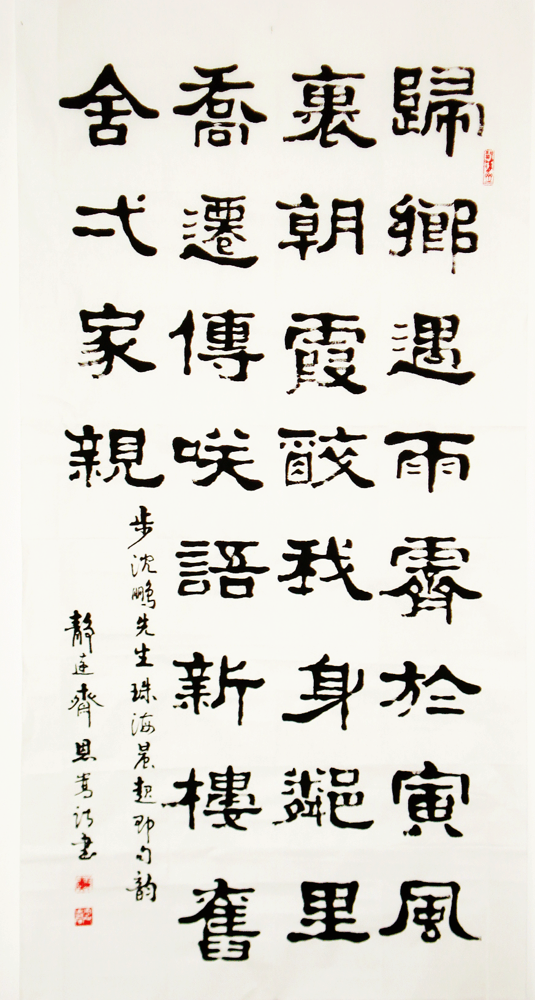
自作诗：步沈鹏诗韵
自2009年2月以来，戴先生将50多万字的精美诗文写进了450多部视频，让读者在聆听优美音乐、欣赏精美图片的同时，去感受美诗美文的深邃内涵，把通常的文字阅读变成了视、听、读同步进行的全身心的艺术享受。
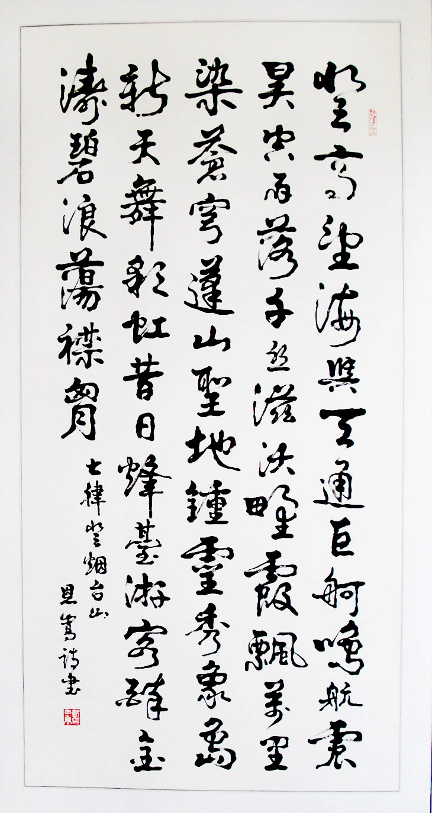
自作诗：登烟台山
戴恩嵩先生的视频同他的随笔一样，笔随心走，心如泉涌，题材广泛，异彩纷呈：诗词书画、山水情思、天文地理，自然景观，人生感悟、修身养性、心灵叩问、文化思考、心理保健、历史钩沉、风物人情等等，都成了他视频中的话题。
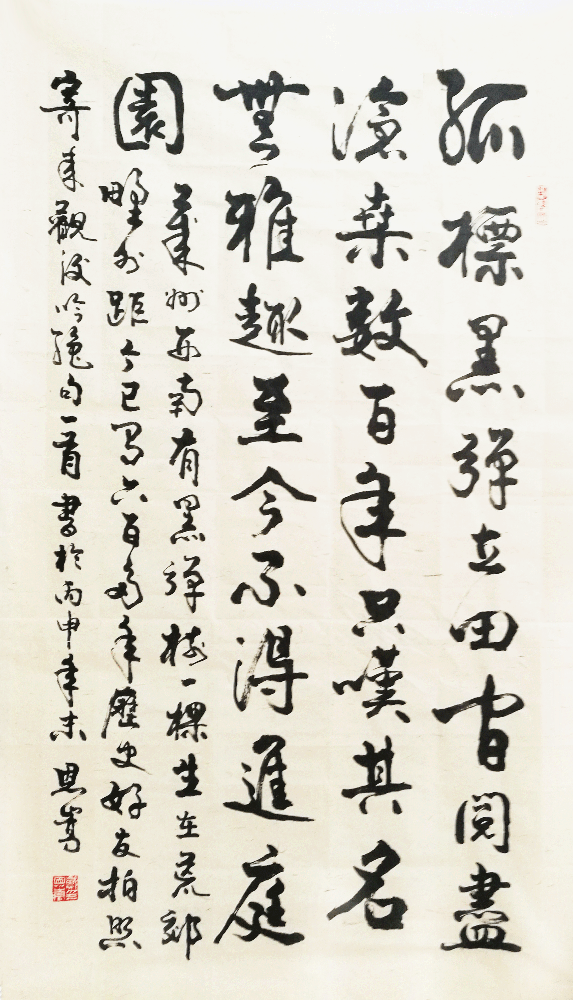
自作诗：黑弹树
读戴恩嵩先生的视频，有一种特殊的感受，如同一位兄长牵着你的手，带你同游社会的大观园，有时与你促膝交谈，而他的心灵之窗始终向你敞开着……
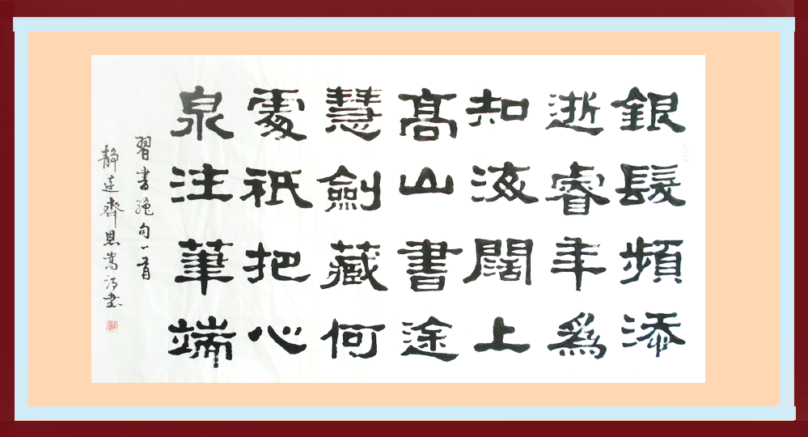
自作诗：习书绝句
戴先生的视频，最精彩、最为引人入胜的，当然是画面上的文字，或许是受篇幅和容量的限制，对画面上的每一句话，都经过了反复地琢磨和推敲，千锤百炼，句句流淌着诗韵，字字蕴含着禅意。除了介绍中外名人、名言和特殊事件的那几部而外，可以说每一部视频中的文字都是一篇散文诗。一节节、一部部地读下来，或让人激动、感奋，或让人沉思、反省，或让人捧腹大笑，或让人无比震憾……
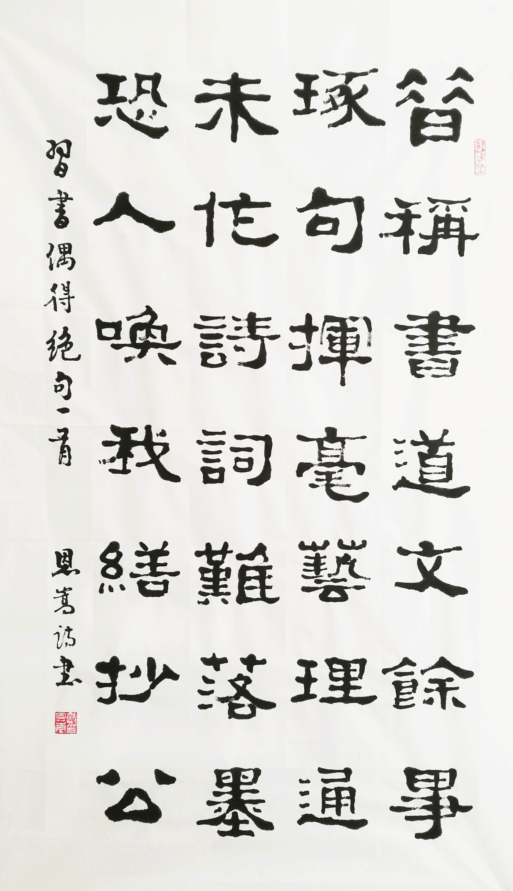
自作诗：习书偶得
许多读者赏读视频后热情回复，已见到的回复文字已达20多万字。现仅举几例如下：
——省高级工艺美术师王石麟先生说：“读戴先生的视频，感受最深的是作家的睿智、坦诚，胸怀宽博和高瞻远瞩，还有，那就是一颗永远年轻的心。作为曾经担任过重要职务的领导干部，虽然年逾古稀，人生的视线却一点都不模糊，充分展示了作家的人格魅力。”
——莱州市博物馆馆长、著名书法家林光旭先生说：“戴先生视频中的语言很美，美在洗炼，美在质朴，节奏舒缓，叙述温和，如诗如歌，美不胜收，而且常常使人感动。”他还说，“有好多部视频，我读过后又传给了正在高校读书的儿子。虽然，青少年的审美观同我们这一代人存在着一定的差异，但是，人生的信念和道德理念却应该是一致的。受戴老的视频所感动的绝不止你和我，与年轻人共读，是加强交流与沟通的一种很好的方式。”
——离休干部刘纪涛先生，也是一名老文艺工作者，他说：“能从电脑网络上读到戴恩嵩先生的视频，是我人生中最大的享受。每当收到新视频，看一遍还想再看一遍，反反复复总是看不够。我觉得，视频中有一种精神上的力量，让人享受到的不仅仅是感官上的娱悦，更重要的是心灵慰藉和精神激励。”刘老先生把这些美轮美奂的“精神食粮”，传给他远在北京、济南、青岛、大连、江西的亲朋好友，甚至，还传到了大洋彼岸，让在美国加州定居了十多年的女儿一起感受这份愉悦。他觉得戴先生创作的视频最能表达自己的情思，是不可以用金钱来衡量的最为有情有义的礼物。不仅如此，他还一次次的把收集起来的系列视频刻成光碟，分送给身边的友人，让大家一起来分享。
——著名书法理论家、书法家迟志邦先生，读了戴恩嵩先生的系列视频，盛赞其文字“清艳沁心，悠闲浪漫，在平淡无奇中聚焦‘芳菲’”，犹如“诗人的慧眼，哲人的深邃，浸润着哲理的诉说，漫步在唯美的天堂”。戴先生在《参观书画展》中谈到很多书画创作的理论问题。迟先生在回复中说：“细细咀嚼体味，您的语言不但表达准确，而且华美、丰富，真是让人望尘莫及。这是您一生不断勤学、思索、积累的结晶。我最受触动的语句就是您谈及的艺术的平民情结、艺术高境界的哲理性、艺术创作的需要激情，等等，都是艺术真理，耐人寻味，是须一切从艺者应铭记并践行不怠的。”
——旅居加拿大的一位华侨，看了戴先生的《美雾奇观在烟台》后，回复说：“诗情画意尽收眼底，我万万没有想到，烟台竟有这样的奇观美景，回国后，我先到烟台去看看。”……
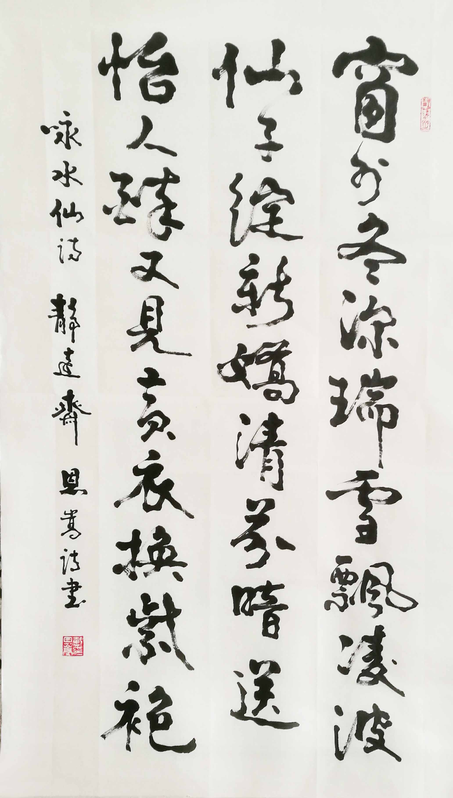
自作诗：咏水仙
在老朋友和广大网友们用最真诚地语言盛赞这些网络视频的时候，有谁知道，为创作这些视频，戴恩嵩先生曾经付出了多么艰辛的劳动！每当要创作一部新的视频，他首先要坐下来静静地构思，撰写文字，选择图片，选配乐曲，再在电脑上合成，一遍遍地试读、修改，有时要改七、八次之多，直到自己满意。然后，把视频传给天南地北的那些翘首以待的各界朋友。这样的一套程序走下来，每部没有七、八个小时是难以完成的。
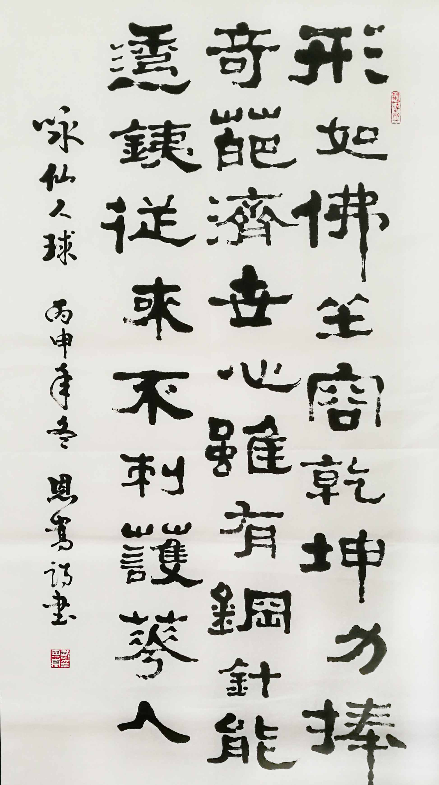
自作诗：咏仙人球
至2016年底，他视频创作累计已达450多部。而今，年近八秩的戴老先生依然默默地耕耘在网络世界里，一如既往地在创作着，正如他在诗中所说，“只把心泉注笔端”。这期间，有多少网友收读了戴恩嵩先生创作的网络视频？没有人作过精确的统计。实际的情况是，戴先生的视频，通过一传十，十传百“滚雪球”式的传播，读者数字以几何级数增长着。许多老朋友都在自己的电脑里建起了专门文件夹，时不时地就打开电脑读上一两部，有时与家人、友人一起赏读，一起议论，受益匪浅
道曰，上善若水，水善利万物而不争。
戴恩嵩先生的文品如水，人品如水。